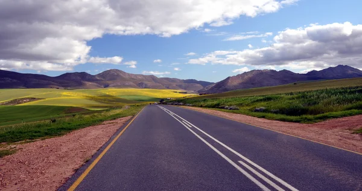

Building roads that connect rural communities to opportunity.

Community-led construction: Building homes brick by brick.

Laying strong foundations: Concrete work for rural schools and clinics.

Materials on site, hope under construction.

From blocks to belonging: Building safe homes in rural South Africa.

More than houses. These are homes, built for safety and dignity

Paved roads connecting rural communities to schools, clinics, and markets.

Right tools for rural jobs: Equipment for roads, housing, and infrastructure.

Precision in every project: Quality tools, skilled hands, safe sites.

Earthworks and grading: Preparing the ground for lasting infrastructure.